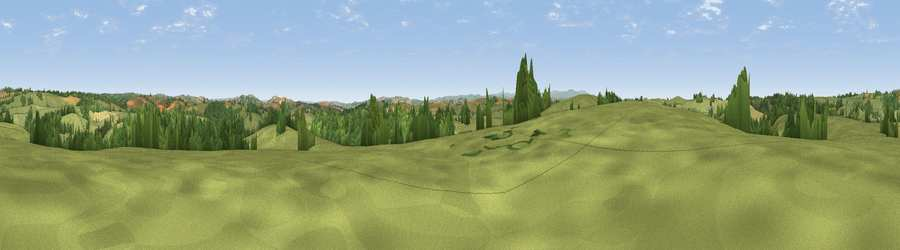

Viewpoint near Kennerleigh
#16977 in England · top 25% of its area beats it · near KennerleighWhere it is
The exact computed spot (SS 80575 06625). Click the marker for map links.
The view, rendered

A 360° render of this exact spot computed from the terrain model, tree cover and land cover — summer colours, afternoon light, calibrated against photographs of famous viewpoints. Real trees, hedges and buildings will differ in detail.
The panorama
Grey silhouette: terrain skyline in each direction (720 bearings, Earth curvature and refraction included). Dashed green: skyline with trees (+15 m) and buildings (+8 m) as obstacles. Blue strip: how far the ground is visible on each bearing.
Where the view opens
Wedge length = distance to the farthest visible ground on that bearing (vegetation-aware). Rings at 10, 25 and 50 km.
What fills the view
65% grassland · 25% woodland · 10% cropland
Angular shares of the visible panorama (visual magnitude), not map area. Landscape diversity 0.38 (0–1 Shannon).
Key numbers
More beautiful places nearby
The staircase of upgrades: each row has a higher view potential than everything closer. Driving times are estimates from straight-line distance, calibrated against real road routing — check an actual route before setting out.
| Place | Direction | Drive | Score |
|---|---|---|---|
| Viewpoint near Kennerleigh | SW · 1 km | ~2 min | 58.7 |
| Viewpoint near West Sandford | S · 3 km | ~8 min | 63.5 |
| Woolsgrove Hill | SSW · 4 km | ~8 min | 64.0 |
| Viewpoint near Stockleigh Pomeroy | ESE · 9 km | ~17 min | 74.7 |
| Viewpoint near Stockleigh Pomeroy | ESE · 10 km | ~19 min | 78.9 |
| Viewpoint near Whitestone | SSE · 13 km | ~24 min | 79.8 |
| Viewpoint near Kenn | SSE · 25 km | ~41 min | 80.0 |
| Viewpoint near Kenton | SSE · 28 km | ~44 min | 80.7 |
50.84678, -3.69774 · source: screening · position refined by local search. Computed location — check access rights before visiting.